6 Metodología Box-jenkins
La metodología Box-Jenkins es una metodología ampliamente usada en series de tiempo y se refiere a un conjunto de procedimientos para identificar, ajustar y verificar los modelos ARIMA con los datos en la serie de tiempo.
Esta metodología se divide en:
Identificación del modelo: Es aqui donde se busca identificar la estructura natural de la serie de tiempo. Se deben identificar comportamientos de estacionaridad, en caso de ausencia de la misma, evaluar tecnicas como la diferenciación, identificar el orden de los componentes autoregresivos (AR) y de media móvil (MA), del modelo ARMA o ARIMA de ser necesario.
Estimación del modelo: Es en este punto en el cual una vez se ha identificado el modelo ideal, se estiman los parametros del modelo y a su vez se revisa el comportamiento de los residuos, con el fin de identificar si existe o no patrones significativos.
Diagnostico y Pronostico: Es en este punto donde se evalua la validez del modelo construido y se utiliza para realizar pronosticos.
Para llevar a cabo esta metodología consideramos relevante hacer ciertas definiciones:
Modelo Autoregresivos (AR)
Un modelo autoregresivo de orden p toma la siguiente forma:
\[\begin{align*} {Y}_{t} = \phi_{0}+\phi_{1}{Y}_{t-1}+\phi_{2}{Y}_{t-2}+...+ \phi_{p}{Y}_{t-p} + \epsilon_{t} \end{align*}\]
Donde:
\({Y}_{t}\)= Variable de respuesta (dependiente) en el tiempo t.
\({Y}_{t-1},{Y}_{t-2},...,{Y}_{t-p}\)= Variable de respuesta en los retrasos t-1, t-2, t-p que desempeñan la funcion de variables independientes.
\(\phi_{0}, \phi_{1}, \phi_{2},\phi_{p}\)= Coeficientes que seran estimados.
\(\epsilon_{t}\)= Término de error en el tiempo t (Representa los efectos de las variables que no explica el modelo)
Modelo de Promedio Móvil (MA)
Un modelo de promedio móvil de orden q toma la siguiente forma:
\[\begin{align*} {Y}_{t} = \mu - \omega_{1}\epsilon_{t-1}-\omega_{2}\epsilon_{t-2} - \omega_{q}\epsilon_{t-q} + \epsilon_{t} \end{align*}\]
Donde:
\({Y}_{t}\)= Variable de respuesta (dependiente) en el tiempo t.
\(\mu\)= media constante en el proceso
\(\omega_{0}, \omega_{1}, \omega_{2},\phi_{p}\)= Coeficientes que seran estimados.
\(\epsilon_{t}\)= Término de error en el tiempo t
\(\epsilon_{t-1}, \epsilon_{t-2}, \epsilon_{t-q}\)= Errores en periodos anteriores al tiempo t incorporados en la respuesta \(Y_t\).
Los modelos de promedio móvil MA(q) proporcionan pronósticos de Y con base en una combinación lineal de un número finito de errores pasados, mientras que los modelos autorregresivos (p) pronóstican a Y como una función lineal de un número finito de valores anteriores de Y.
Modelo de Promedios Móviles Autoregresivos (ARMA)
Un modelo ARMA (p,q) tiene la siguiente forma:
\[\begin{align*} {Y}_{t} = \phi_{0}+\phi_{1}{Y}_{t-1}+\phi_{2}{Y}_{t-2}+...+ \phi_{p}{Y}_{t-p} + \epsilon_{t} - \omega_{1}\epsilon_{t-1}-\omega_{2}\epsilon_{t-2} - \omega_{q}\epsilon_{t-q} \end{align*}\]
Los modelos ARMA(p,q) describen el comportamiento de series de tiempo estacionarias. Cuando q=0 el modelo se convierte en un modelo autorregresivo de orden p y cuando p=0 el modelo es de promedios moviles de orden q.
Modelo Autoregresivo Integrado de Promedio Móvil (ARIMA)
Imaginemos la situación en la cual no se cumple el supuesto de estacionariedad. Nace entonces la opcion de utilizar un modelo ARMA pero sobre una serie diferenciada, en la cual se busca que la serie varie al rededor de un nivel fijo y las autocorrelaciones desaparezcan con rapidez.
La notacion de un modelo ARIMA(p,d,q) se utiliza para indicar los modelos para series de tiempo estacionarias (d=0), como para las no estacionarias (d>0).
Se debe tener en cuenta que a la hora de seleccionar un modelo es importante cumplir con el Principio de Parsimonia que se traduce en escoger el modelo menos complejo.
Una vez se han hecho los anteriores definiciones podemos comenzar a aplicar la metodología en los precios de cierre del top 10 de las acciones que cotizan en el indice S&P 500.
6.1 Identificacion del modelo
Como lo vimos en las ultimas unidades de este bookdown, se hicieron la respectiva prueba adf (Test Dicky Fuller Aumentada), con el fin de identificar las series que eran estacionarias o no. Este nos dio como resultado que 9 de las 10 series evaluadas no eran estacionarias por lo cual se requirió hacer una diferenciacion en una unidad para las 9 series no estacionarias.
Se continuo evaluando de nuevo el test adf, en el cual ya nos sugirio que contabamos con series estacionarias.
En este punto retomamos el desarrollo del ejercicio, en donde identificaremos el orden autorregresivo y de media móvil a partir del uso de las gráficas de funciones de autocorrelación (FAC) y la función de autocorrelación parcial(PACF).
Se acompañó con el uso de la función auto.arima() en R, que selecciona automáticamente el modelo ARIMA óptimo. En el explora diferentes combinaciones de parámetros y selecciona el modelo que minimiza un criterio de información como el AIC y el BIC.
Funciones de autocorrelación en las series diferenciadas
symbols_no_estacionarios <- setdiff(unique(precios$symbol), "XOM")
par(mar = c(5, 4, 4, 2) + 0.1)
for (i in unique(symbols_no_estacionarios)) {
stock_data <- precios[precios$symbol == i, ]
stock_data_omit_na <- na.omit(stock_data$diferenciado1)
stock_ts <- ts(stock_data_omit_na)
stock_acf <- acf(stock_ts,plot = FALSE)
stock_pacf <- pacf(stock_ts,plot = FALSE)
par(mfrow=c(1,2))
plot(stock_acf, main=paste("ACF ", i," con ndif=1"),cex.main = 0.5)
plot(stock_pacf, main=paste("PACF ", i," con ndif=1"), cex.main = 0.5)
}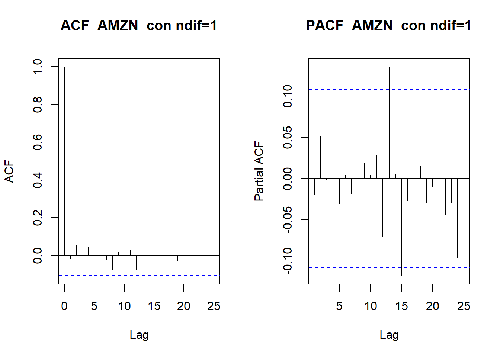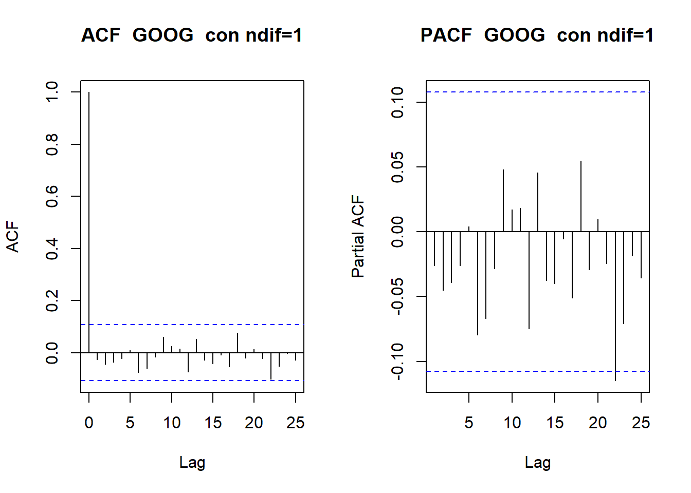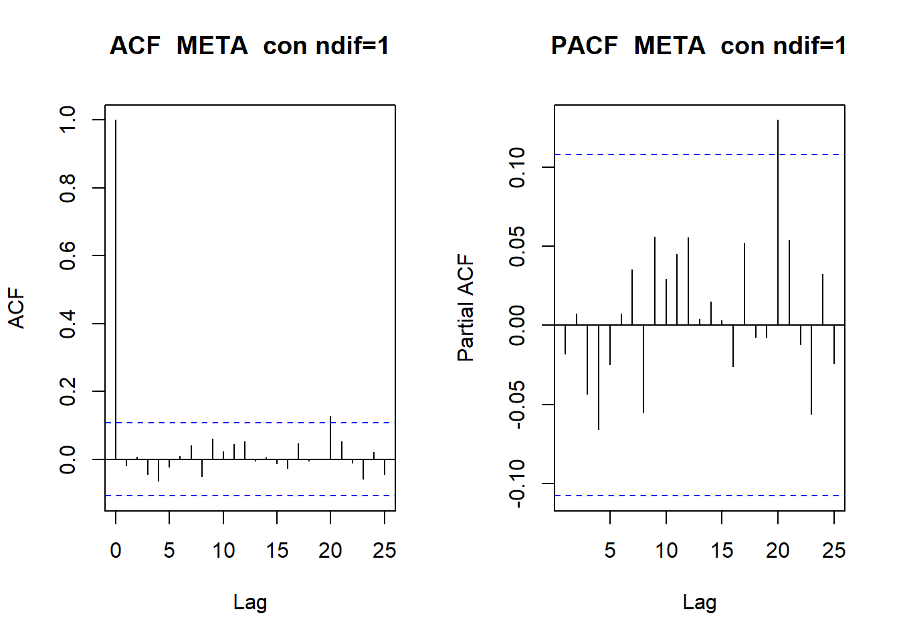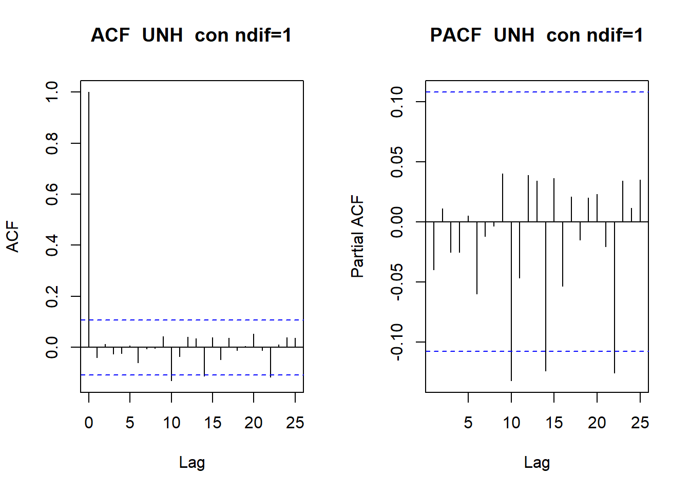
6.2 Estimacion del modelo
Busqueda de paramétros AR y MA automáticamente
symbols_no_estacionarios <- setdiff(unique(precios$symbol), "XOM")
for (i in unique(symbols_no_estacionarios)) {
stock_data <- precios[precios$symbol == i, ]
stock_data_omit_na <- na.omit(stock_data$diferenciado1)
stock_ts <- ts(stock_data_omit_na)
cat(paste("Acción: ", i, "\n"))
modelo<-auto.arima(stock_ts)
cat(paste("Modelo Sugerido: ", modelo, "\n"))
plot(modelo)
lines(stock_ts, col = "blue")
}## Acción: AAPL
## Modelo Sugerido: ARIMA(0,0,0) with zero mean
## Acción: MSFT
## Modelo Sugerido: ARIMA(2,0,0) with zero mean
## Acción: AMZN
## Modelo Sugerido: ARIMA(0,0,0) with zero mean
## Acción: NVDA
## Modelo Sugerido: ARIMA(0,1,1)## Acción: GOOGL
## Modelo Sugerido: ARIMA(0,0,0) with zero mean
## Acción: BRK-B
## Modelo Sugerido: ARIMA(0,0,0) with zero mean
## Acción: GOOG
## Modelo Sugerido: ARIMA(0,0,0) with zero mean## Acción: META
## Modelo Sugerido: ARIMA(3,1,1)
## Acción: UNH
## Modelo Sugerido: ARIMA(0,0,0) with zero mean
Pruebas de diagnóstico en los residuos del modelo
symbols_no_estacionarios <- setdiff(unique(precios$symbol), "XOM")
for (i in unique(symbols_no_estacionarios)) {
stock_data <- precios[precios$symbol == i, ]
stock_data_omit_na <- na.omit(stock_data$diferenciado1)
stock_ts <- ts(stock_data_omit_na)
cat(paste("Acción: ", i, "\n"))
modelo<-auto.arima(stock_ts)
checkresiduals(modelo)
}## Acción: AAPL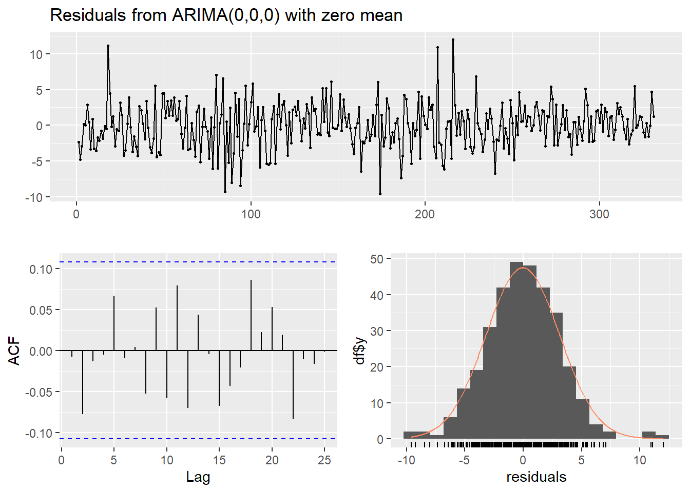
##
## Ljung-Box test
##
## data: Residuals from ARIMA(0,0,0) with zero mean
## Q* = 6.6899, df = 10, p-value = 0.7544
##
## Model df: 0. Total lags used: 10
##
## Acción: MSFT##
## Ljung-Box test
##
## data: Residuals from ARIMA(2,0,0) with zero mean
## Q* = 10.413, df = 8, p-value = 0.2373
##
## Model df: 2. Total lags used: 10
##
## Acción: AMZN##
## Ljung-Box test
##
## data: Residuals from ARIMA(0,0,0) with zero mean
## Q* = 4.492, df = 10, p-value = 0.9224
##
## Model df: 0. Total lags used: 10
##
## Acción: NVDA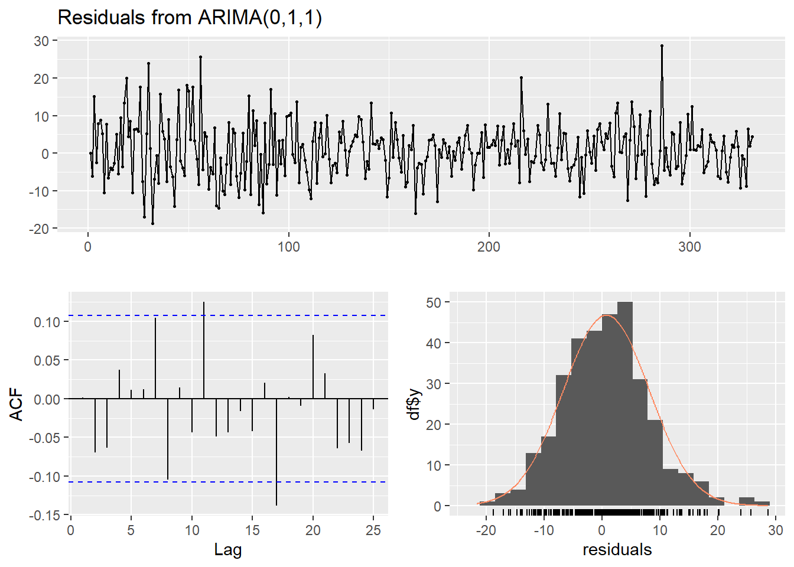
##
## Ljung-Box test
##
## data: Residuals from ARIMA(0,1,1)
## Q* = 11.67, df = 9, p-value = 0.2326
##
## Model df: 1. Total lags used: 10
##
## Acción: GOOGL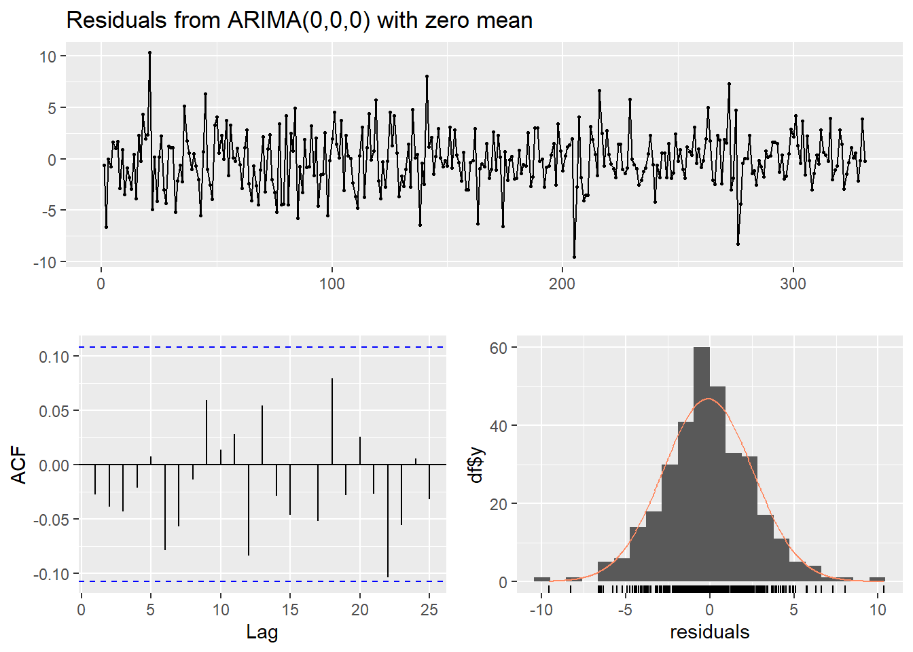
##
## Ljung-Box test
##
## data: Residuals from ARIMA(0,0,0) with zero mean
## Q* = 6.1087, df = 10, p-value = 0.806
##
## Model df: 0. Total lags used: 10
##
## Acción: BRK-B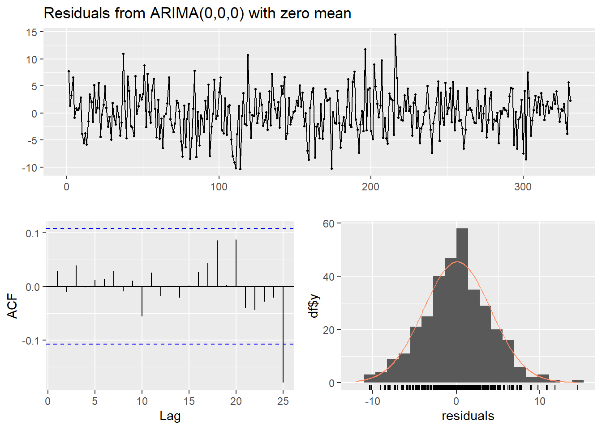
##
## Ljung-Box test
##
## data: Residuals from ARIMA(0,0,0) with zero mean
## Q* = 2.3277, df = 10, p-value = 0.9932
##
## Model df: 0. Total lags used: 10
##
## Acción: GOOG##
## Ljung-Box test
##
## data: Residuals from ARIMA(0,0,0) with zero mean
## Q* = 6.3045, df = 10, p-value = 0.7891
##
## Model df: 0. Total lags used: 10
##
## Acción: META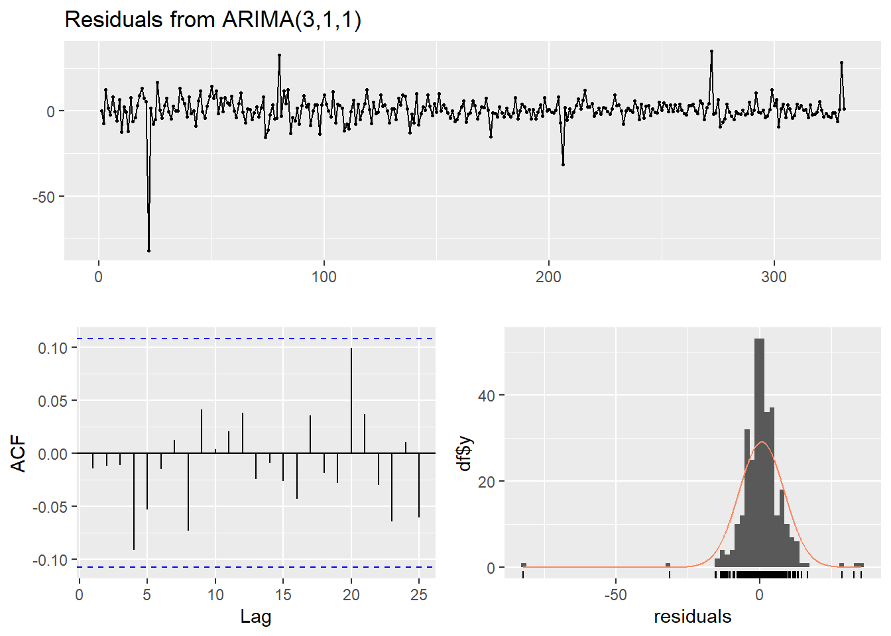
##
## Ljung-Box test
##
## data: Residuals from ARIMA(3,1,1)
## Q* = 6.446, df = 6, p-value = 0.3751
##
## Model df: 4. Total lags used: 10
##
## Acción: UNH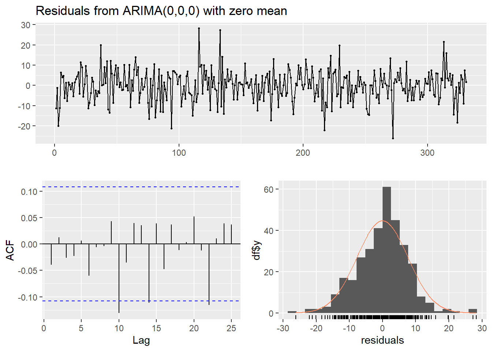
##
## Ljung-Box test
##
## data: Residuals from ARIMA(0,0,0) with zero mean
## Q* = 8.7559, df = 10, p-value = 0.5554
##
## Model df: 0. Total lags used: 10
Identificacion de cambios en media para cada serie
for (i in unique(symbols_no_estacionarios)) {
stock_data <- precios[precios$symbol == i, ]
stock_data_omit_na <- na.omit(stock_data$diferenciado1)
stock_ts <- ts(stock_data_omit_na)
mval<-cpt.mean(stock_ts,method = "AMOC")
cat(paste("Acción: ", i, "\n"))
cat(paste("Cambio en media en el día: ", cpts(mval), "\n"))
plot(mval, type = "l", cpt.col = "blue", xlab = "Valor", cpt.width = 4, main = "default penalty")
}## Acción: AAPL
## Cambio en media en el día: 253## Acción: MSFT
## Cambio en media en el día: 328## Acción: AMZN
## Cambio en media en el día: 16## Acción: NVDA
## Cambio en media en el día: 15## Acción: GOOGL
## Cambio en media en el día: 2## Acción: BRK-B
## Cambio en media en el día: 4## Acción: GOOG
## Cambio en media en el día: 2## Acción: META
## Cambio en media en el día: 35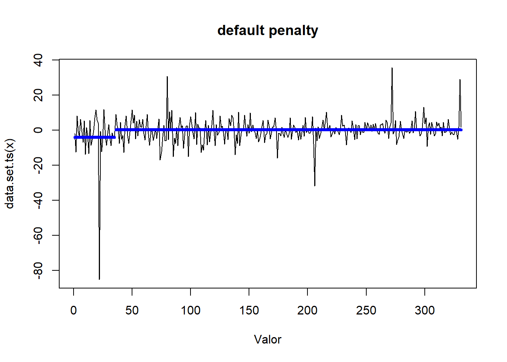
## Acción: UNH
## Cambio en media en el día: 4